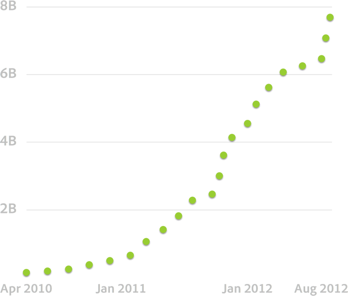

Create the Web
Web Typography
Who are you?
font-family: "Gill Sans", "Helvetica", "Arial", sans-serif;
This is Times New Roman
This is Arial
This is Times New Roman, too.
This is Arial, also.
Even this is Times New Roman
Boring but again, this is Arial
I am Spartacus, and Arial.
How now Times New Roman
The web needs fonts
Webfonts to the rescue


Typekit
Use High-quality Fonts on the Web.
websites
views


Adobe Edge Web Fonts
Get Started with Free Web Fonts
Source Sans Pro
The primary need for type in Adobe’s open source applications has thus far been for usage within user interfaces. A second environment of perennial interest to Adobe is the realm of text typography. Thus the immediate constraints on the design were to create a set of fonts that would be both legible in short UI labels, as well as being comfortable to read in longer passages of text on screen and in print. In thinking of typeface models that accomplish these tasks well, I was drawn to
Source Sans Pro
Open Source Font from Adobe
Conclusions
Questions, Comments, Feedback?
Preso will be up at:
http://terrenceryan.com/createtheweb
Feel free to contact me:
- terry.ryan@adobe.com
- http://terrenceryan.com
- Twitter: @tpryan
- github: tpryan
Questions? #CreateTheWeb